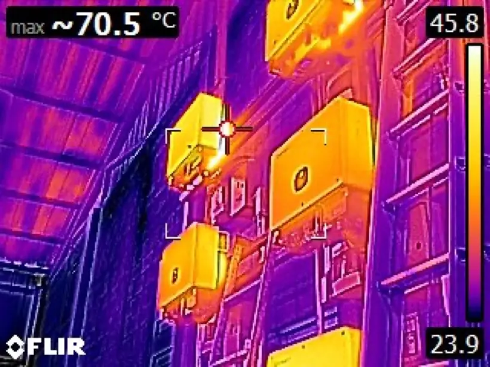
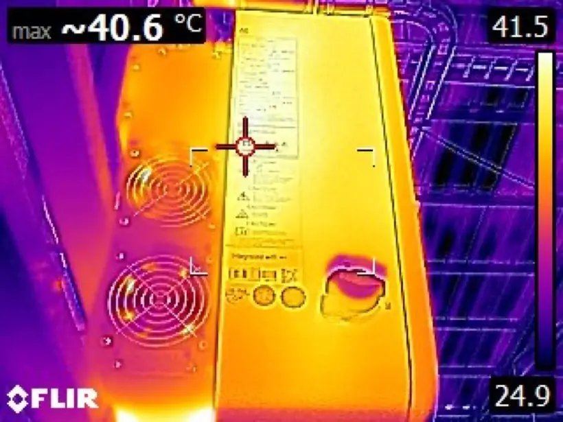
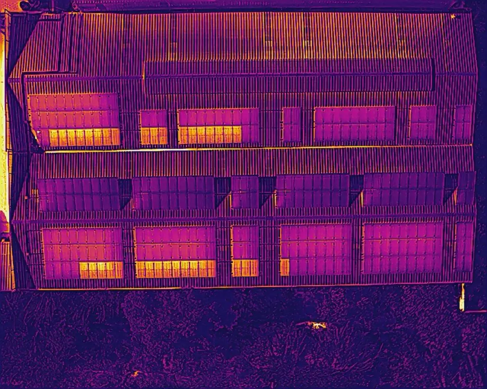

El levantamiento no es una visita de venta. Se abren tableros, se mide y queda este documento: cada observación con su ubicación, su lectura y su prioridad. No incluye precios. Los números vienen después, y solo si tú los pides.
Una sola visita, con la planta operando. La termografía aérea se hace con dron, así que no hay que parar ninguna línea; la de contacto se toma sobre los equipos que la inspección aérea o la revisión física señalen.
| Frente | Qué se hace |
|---|---|
| Tableros de distribución | Apertura, inspección física y termografía de contacto de barras, conexiones e interruptores |
| Subestación y transformadores | Inspección visual y térmica de conexiones, terminales y puntos de acceso disponibles |
| Conexiones y canalizaciones | Revisión de apriete, señales de calentamiento y condiciones visibles de la instalación |
| Techo y arreglo fotovoltaico si existe | Pasada térmica aérea con dron sobre el arreglo completo, sin parar la operación |
Lo que este documento no es: no es una cotización, no trae precios y no compromete fechas de obra. Es el registro fechado de la condición en que se encontró la instalación el día de la visita, para que la decisión que siga se tome con el dato y no con la memoria de alguien.
Aquí va el veredicto en una frase: qué se encontró, dónde se concentra y qué conviene atender primero. Debajo, el conteo de observaciones por prioridad, para que dirección lea el estado de la planta sin abrir la tabla.
Es el mapa térmico de tu instalación: qué punto está caliente, cuánto, y qué tan rápido hay que atenderlo. Cada renglón trae la ubicación exacta para que cualquier proveedor, sea quien sea, cotice contra el mismo alcance.
| # | Ubicación | Lo observado | Lectura | Prioridad |
|---|---|---|---|---|
| 01 | Tablero general · barra fase B | Conexión con temperatura muy por encima de sus vecinas. Es el patrón típico de una conexión floja: no hace ruido, no huele y desde el piso no se ve | 70.5 °C | Crítico |
| 02 | Techo nave A · string 7 | Tramo del arreglo fotovoltaico trabajando fuera de rango térmico frente al resto, visible en la pasada aérea | Térmica aérea | Atender |
| 03 | CCM línea 2 · terminal de salida | Calentamiento incipiente en terminal. Aún lejos del punto de falla, pero con gradiente que no corresponde a la carga | 52.3 °C | Atender |
| 04 | Tablero de alumbrado nave B | Apriete pendiente detectado en inspección física, sin firma térmica todavía | Inspección | Vigilar |
| 05 | Acometida · interruptor principal | Desbalance de carga entre fases dentro de tolerancia, en el límite superior | Medición | Vigilar |
| 06 | Inversor 3 | Operación en rango. Se incluye como contraste: así se ve un equipo sano en la misma cámara | 40.6 °C | Normal |
| 07 | Transformador principal | Conexiones y terminales sin gradiente anómalo el día de la visita | En rango | Normal |



El levantamiento no es una lista de sustos. Lo que se encontró en orden también queda por escrito, con fecha, porque ese registro es el que responde cuando alguien pregunta si la instalación estaba revisada.
En este ejemplar de muestra: el transformador principal y los equipos de conversión operan en rango, y la instalación general está en condición razonable para su edad. Si en tu planta está todo bien, el documento lo dice con la misma claridad, y te sirve igual: queda constancia fechada de la condición de la instalación.
Ordenado por riesgo, no por costo. Qué va primero y por qué, para que la decisión no dependa de quién grite más fuerte en la junta.
Es el punto que puede tirar la planta o iniciar un incendio. Una conexión en esa condición no se queda quieta: empeora sola hasta que falla.
Ninguno de los dos es una emergencia hoy. Los dos lo serán si se dejan: uno cuesta producción todos los días y el otro va camino a ser el hallazgo 01 de la siguiente visita.
Quedan registrados con fecha y lectura. En la siguiente revisión se comparan contra este reporte y la tendencia dice si suben de prioridad o se cierran.
Sobre los números: este documento entrega la condición y la prioridad, no la cotización. Si decides atender algo, con este mismo reporte cualquier propuesta, nuestra o de quien tú elijas, se cotiza contra el mismo alcance, y las comparaciones son parejas.
Sobre este documento. Este ejemplar es un formato de muestra con hallazgos ilustrativos; el reporte de tu planta se llena con lo observado y medido el día de la visita, y queda fechado y firmado por el responsable técnico. Las lecturas de temperatura se entregan con su imagen termográfica, de modo que cada cifra es verificable en la propia evidencia.
ENNCO · Energy & Innovation Consulting · León, Guanajuato · ennco.com.mx